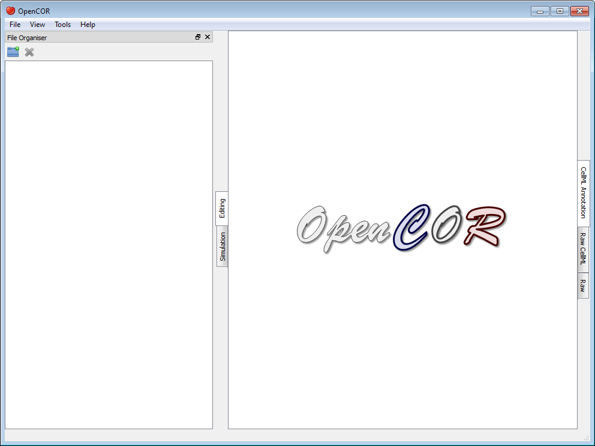
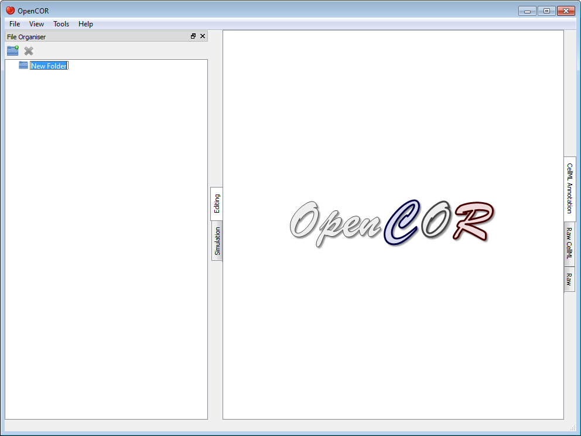
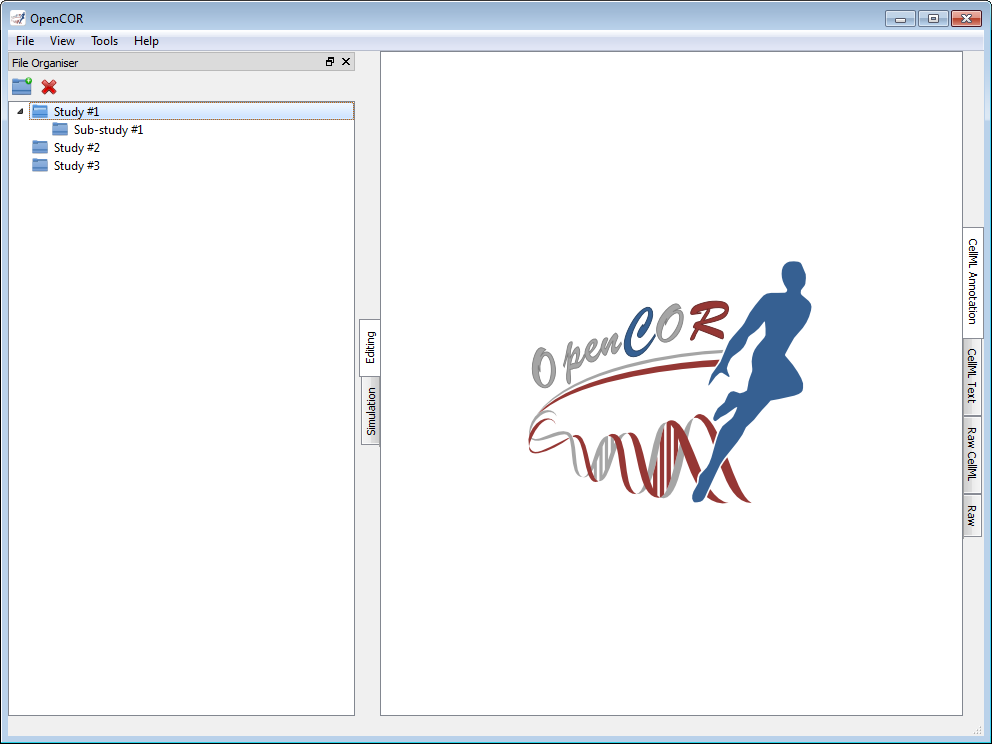
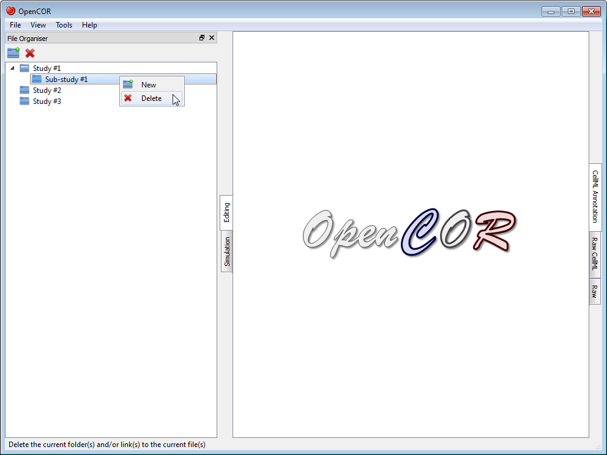
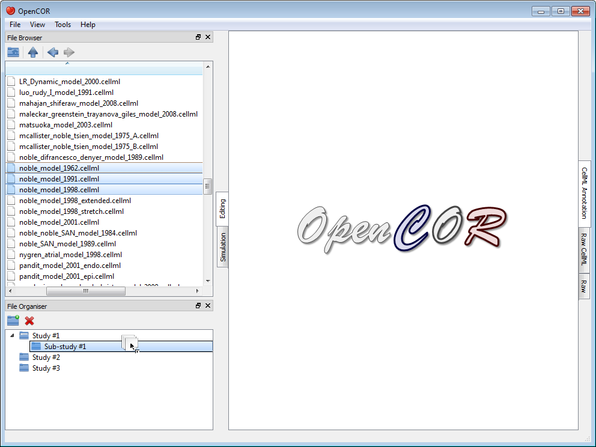
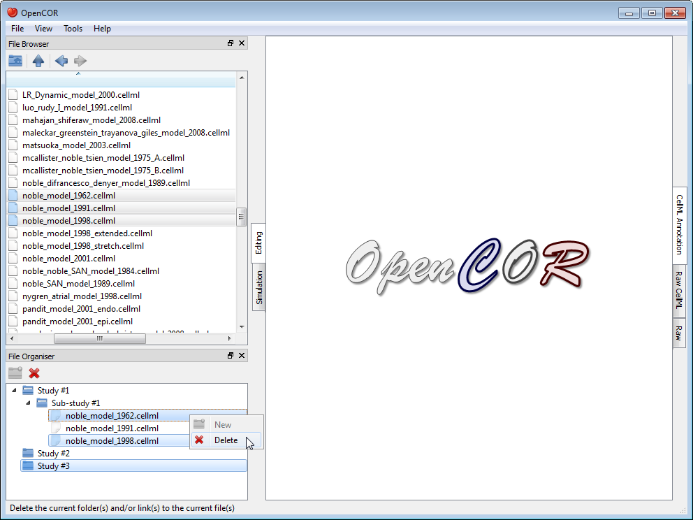

The FileOrganiserWindow plugin allows you to organise your files in a virtual manner, i.e. independently of where they are physically located. Your virtual environment is remembered from one session to another and is originally empty:

To create a (virtual) folder, you need to click on the  button in the toolbar (or use the context menu):
button in the toolbar (or use the context menu):

The folder can be renamed and other (sub-)folders created, if needed:

The (sub-)folders can be moved around by dragging and dropping them within your virtual environment. An existing (sub-)folder can be deleted by clicking on the  button in the toolbar (or by using the context menu):
button in the toolbar (or by using the context menu):

Files can be dragged and dropped from the File Browser window (or the system's file manager) onto your virtual environment:

As for folders, (virtual) files can be moved and deleted (together with folders or not):

|
|
Create a new folder |
|---|---|
|
|
Delete the current folder(s) and/or link(s) to the current file(s) |